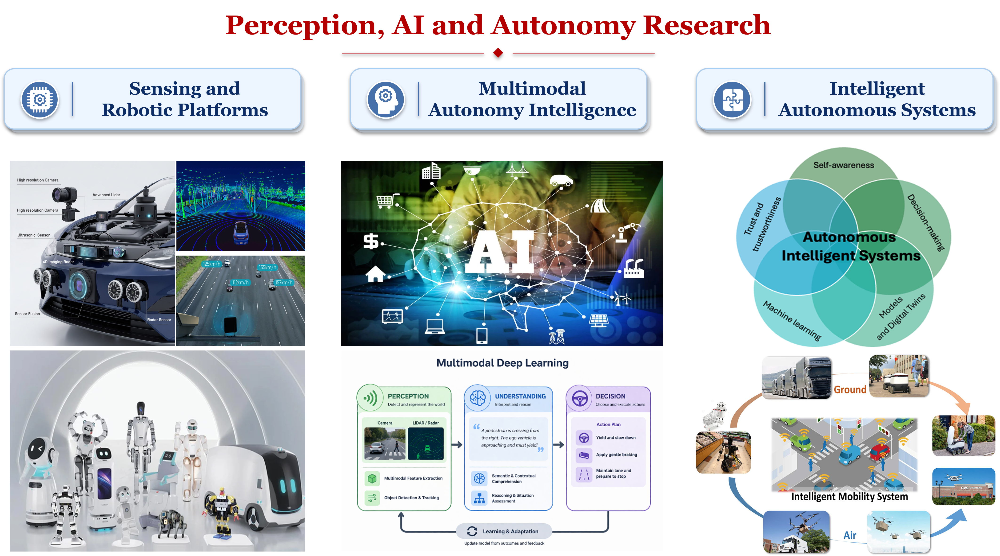

We work on research topics including, but not limited to:
Multimodal sensing, data processing, and sensor fusion
Deep learning-based perception for scene understanding
Autonomous driving and intelligent transportation systems
Robotics, embodied intelligence, and physical AI
Multimodal foundation models and agentic AI
World models and spatial intelligence for closed-loop autonomy
Reliable, trustworthy, and safety-aware AI for autonomous systems
Application-driven AI for real-world sensing and autonomy
Sensor FusionDeep PerceptionRoboticsPhysical AIMultimodal AIAgentic AIWorld ModelsApplied AIAutonomous Systems

These topics share one goal: the scientific and computational foundations for reliable autonomous intelligence in the physical world. They also share one difficulty. Sensors fail, calibration drifts, observations are incomplete, and rare events dominate safety outcomes, so perception, reasoning, and action cannot be studied in isolation.
We therefore pursue the work above along three connected directions, each carrying the loop one step further: from sensing, to understanding, to decision-making.
Multi-Sensor Fusion and Deep Perception
We develop reliable multimodal perception methods that transform heterogeneous sensor data into robust situational awareness. This direction integrates Camera, Radar, LiDAR, GNSS, and other sensing modalities through calibration, spatial alignment, temporal synchronization, uncertainty modeling, adaptive fusion, and deep representation learning.
Beyond improving accuracy on standard benchmarks, our goal is to create perception systems that understand their own reliability, detect degradation, and remain functional under occlusion, adverse weather, sensor faults, domain shift, and real-time deployment constraints.
Recent articles on this topic:
Lei Cheng, Lihao Guo, Tianya Zhang, Tam Bang, Austin Harris, Mustafa Hajij, Mina Sartipi, and Siyang Cao. “CalibRefine: Deep Learning-Based Online Automatic Targetless LiDAR–Camera Calibration with Iterative and Attention-Driven Post-Refinement.” IEEE Transactions on Instrumentation and Measurement, 2026.
Lei Cheng and Siyang Cao. “TransRAD: Retentive Vision Transformer for Enhanced Radar Object Detection.” IEEE Transactions on Radar Systems, 2025.
Lei Cheng, Arindam Sengupta, and Siyang Cao. “3D Radar and Camera Co-Calibration: A Flexible and Accurate Method for Target-based Extrinsic Calibration.” IEEE Radar Conference (RadarConf23), 2023.
Multimodal AI for Autonomous Systems
We explore how multimodal AI foundation models can enable a new generation of autonomous systems that are more generalizable, context-aware, and adaptive. This direction studies how vision, geometry, motion, language, and semantics can be unified into physically grounded representations that connect low-level sensing with high-level reasoning.
Rather than treating foundation models as black-box predictors, we aim to constrain them with sensor evidence, scene geometry, temporal dynamics, uncertainty estimation, and physical plausibility. The long-term vision is foundation-model-enabled autonomy for open-world perception, semantic reasoning, human–system communication, and safe decision support.
Recent articles on this topic:
Lei Cheng and Siyang Cao. “Radar-Camera Fused Multi-Object Tracking: Online Calibration and Common Feature.” IEEE Transactions on Intelligent Transportation Systems, 2026.
Lei Cheng, Arindam Sengupta, and Siyang Cao. “Deep Learning-Based Robust Multi-Object Tracking via Fusion of mmWave Radar and Camera Sensors.” IEEE Transactions on Intelligent Transportation Systems, 2024.
Lei Cheng and Siyang Cao. “Online Targetless Radar–Camera Extrinsic Calibration Based on the Common Features of Radar and Camera.” IEEE National Aerospace and Electronics Conference (NAECON), 2023.
Intelligent Autonomous Systems: Prediction, Control, and Planning
Reliable perception matters only when it leads to better decisions. We study how perception, uncertainty, and scene understanding can be translated into risk-aware prediction, control, and planning for intelligent autonomous systems.
In transportation and autonomous driving, this includes predictive safety systems, variable speed limits, advanced safety warnings, uncertainty-aware motion prediction, and planning under occlusion, poor visibility, and rare events. In robotics and related settings, it includes anomaly-aware monitoring, intent inference, and adaptive operation in human-centered environments.
Recent articles on this topic:
Tam Bang, Hoang H. Nguyen, Deponker Sarker Depto, Lei Cheng, Lihao Guo, Siyang Cao, Tianya Zhang, Austin Harris, and Mina Sartipi. “Real-Time Edge-Based Multi-Sensor Fusion for Vulnerable Road User Safety at Urban Intersections.” Transportation Research Board (TRB) Annual Meeting, 2026.
Tianya Zhang, Lei Cheng, Tam Bang, Lihao Guo, Mustafa Hajij, Siyang Cao, Austin Harris, and Mina Sartipi. “Roadside Sensor Systems for Vulnerable Road User Protection: A Review of Methods and Applications.” IEEE Access, 2025.
Lei Cheng, Yaobang Gong, Xianfeng Yang, and Gang-Len Chang. “Drone-based Workzone Safety Alert System.” M-TRAIL, 2025.